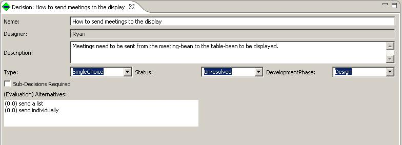

In order to create a new decision, right-click the "Decisions" in the RationaleExplorer and choose new, which will bring up the decision editor. Or we could edit an existing decision by right-click the name of an existing decision and choose edit or by double-clicking the name of the decision. See the following figures:
The following figure shows the Decision Editor. As with all SEURAT elements, the Name is required. There are two types of decisions: one where sub-decisions are required and one where alternatives are required. Decisions requiring sub-decisions are ones that can be broken into sub-components where answering all the sub-decision answers the parent. In this case, alternatives are not present. The example given here shows a decision that has alternatives. Each alternative is displayed here but added by right-clicking on the decision in the Rationale Explorer. Here, a numerical evaluation (rating) for the alternative is given along with its name. Higher numbers signify more support.
